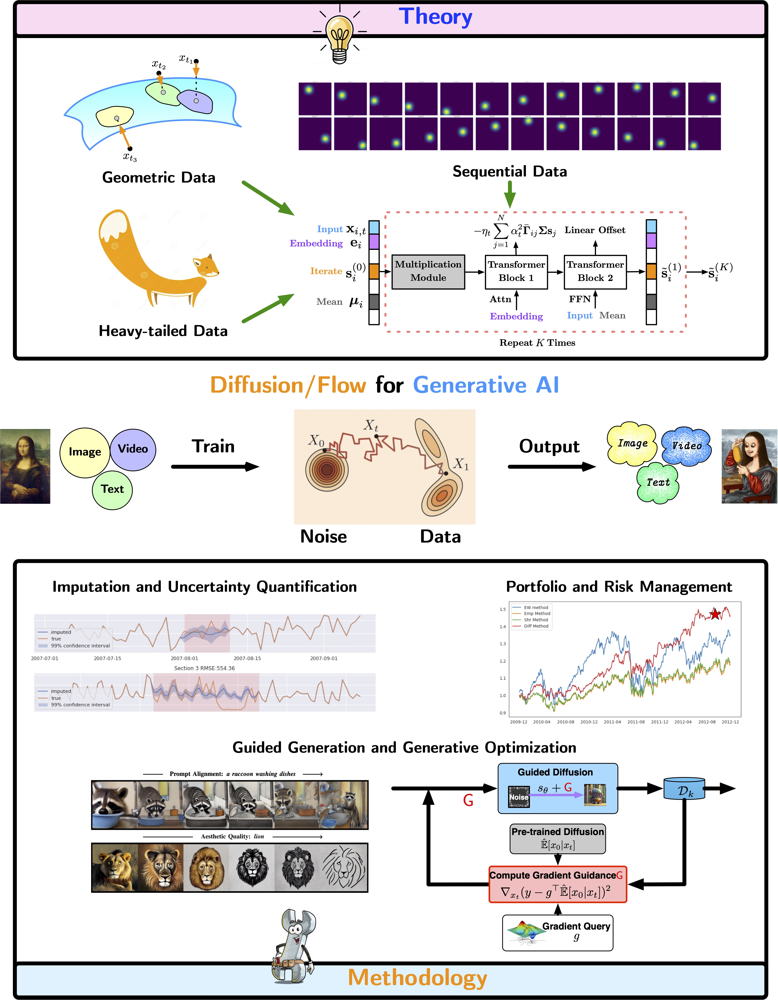

Minshuo Chen
 |
Minshuo Chen 陈旻硕 |
News
I am teaching a new course on Deep Generative AI with a focus on diffusion and flow models
Lecture notes and slides are available at Deep Generative AI Course.I gave a SNAPP seminar on guidance for fine-tuning diffusion models
Slides are avaiable guidance_diffusion.Mengdi and I gave a tutorial on diffusion models at INFORMS 2024, Seattle
Slides are available tutorial_diffusion.
Invited speaker at MMLS’24 May 20 - 21 (Free registration)
I will speak at ISYE Statistics Seminar, Georgia Tech
Title: Diffusion Models for Distribution Estimation and OptimizationI will present Diffusion Models at INFORMS 2023 session
MA35. The Interplay between Learning, Optimization, and Statistics
Oct. 16th, 8:00 - 9:15 AM
About Me
I am an assistant professor with the IEMS department at Northwestern University. Prior to joining Northwestern, I am an associated research scholar with the ECE department at Princeton University, working with Prof. Mengdi Wang. I obtained my Ph.D. from Georgia Tech, under the supervision of Prof. Tuo Zhao and Prof. Wenjing Liao. I also received a Master's degree in Electrical Engineering from UCLA, and Bachelor's degree in Electrical and Information Engineering from Zhejiang University. Here is my CV.
My research focuses on developing principled methodologies and theoretical foundations of learning and decision-making. I am particularly interested in
Generative AI: diffusion models for data modeling and beyond
Foundations of learning: approximation, optimization and efficiency
(Deep) reinforcement learning: diagnosis and control in complex systems
Feel free to send me an email if you have mutual interest with me.
|
 |
Awards
ARC-TRIAD Student Fellowship
William S. Green Fellowship
ICML, NeurIPS Travel Award